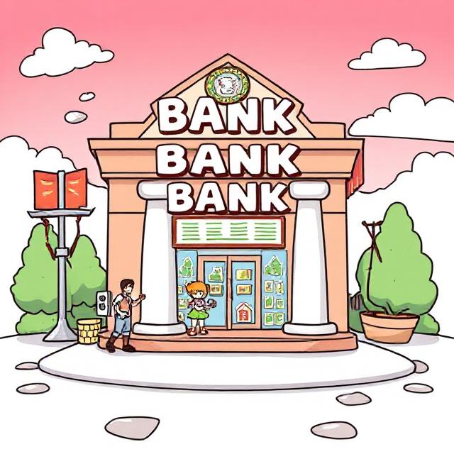

Snake - The Maze Solver
Uses A-Steric algorithm to efficiently find the shortest path between current position and food ro solve the maze.
Python
Turtle Graphics
Uses A-Steric algorithm to efficiently find the shortest path between current position and food ro solve the maze.
A responsive dashboard fetching real-time torrent information using an API and allowing user to control torrents from anytime, anywhere.

A basic bank app which allows user to interact with his account, new accounts can be created, user can also open a complaint which will be responded by the admin.
An app which allows user to manage, create and link directores with github repo using GUI.